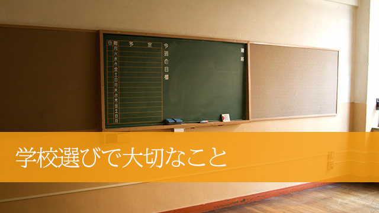

私は以前の記事(＝良い学校、悪い学校 学校選びの注意点)で、学校選びの基準について「良い」とか「悪い」という見方をするなと書きました。
というのもあまりにも「よい学校はどこですか？」と聞かれることが多いからで、よい学校があるとするなら反対の「悪い学校」が存在することになってしまい、しかし誰にとっても絶対的な「良い学校」や「悪い学校」があるわけではないというのが真実だからです。
あくまで実際に通う生徒にとって合うか合わないか、先生や友人と良い出会いや経験があるかどうかで判断すべきであって、結果として「あの学校へ行って良かった」とか「今イチ良くなかった」という感想が生じるものだからです。
なので親の立場からいうと、せいぜい学校の教育方針や全体的姿勢が我が子の性格に照らしてみて合いそうかどうか事前に察することくらいしかないだろうと思います。
たとえば私立などは教育方針がわりと明確な所が多く、何に力を入れているか公立よりは分かりやすくなっています。宗教色を強く出すところもあります。
1つ基準を示すとすれば、私立(高校)の場合進学指導に力を入れているかどうか。つまり勉強をガンガンやらせることを大きな方針にしているのか、わりとノンビリした校風なのかで学校のカラーが二分されます。
進学に力を入れているところは、特進クラス選抜クラスなどコース制を敷いていることが多いのでそれが目安となりますが、最近はどの学校も「グローバル何とか」だとか「スーパー何とか」など、様々な名称をつけて細分化しているので今や実態がわかりづらくなっています。
それでも事前説明会などに行けば、進学型かノンビリ型かは大体わかるのでそこで確かめればよいと思います。
「ウチの子はあまり勉強ばかりさせられるより楽しい高校生活を送らせたい」と考えるならノンビリとした校風の学校へ行かせるほうが良いでしょう。大学付属の中には、そういうノンビリ系の学校もあるし、いっそ公立に行くのも手です。
逆に「ウチの子は言われないと勉強しないので、勉強せざるを得ない環境へ入れたい」と考えるなら特訓系がオススメですが、特訓系の学校へ通った子の中には大学には行けたが「高校生活は灰色の３年間でつまらなかった」と振り返る人もいたりします。
うーむ。やっぱり難しい(笑)
結局のところ、各々のご家庭の価値観と子どもの性格によって大体のところを決めるしかなく客観的に「理想の学校イメージ」を抽出することは困難。そうなるとやはり多くの人は、偏差値や大学実績で「良さそうな」学校を見出していく他ないわけですね。
こういう状況をふまえた上で、あえて私がもう１つの学校選びの基準をあげるとするならそれは「どんな先生方がいるのか」ということです。
すなわち、校長をはじめ熱意のある先生方が多いのかどうか。生徒を伸ばす(学力だけでなく）ことにどれだけ情熱を傾けているのか。そしてそのことに学校全体として取り組んでいるかどうか。そここそが大切な要素ではないかと思うのです。
校長のリーダーシップが学校のカラーを決める
このことは学校が教育の場である以上、一番大事な要素であるはずなのに案外忘れられがちな点ではないでしょうか。
「 しかし 熱心な先生が多いかどうかなど外側からはわからないじゃないか！！」
その通りです。１番知りたい情報なのにわからない。外側から知る術がない。
それはインサイダーな情報だからです。学校もそこの部分はあまり表に出したがらないところです。
個人的な話で恐縮ですが、だからこそ私は自塾の「高校説明会」などでは取材で知り得た学校の「内部情報」をできる限り出席者に語ることで学校選びの決め手にしてもらっています。
これはかなり好評で「学校の内実がよく分かった」「意外な事実が聞けて参考になった」という声が上がります。
中には「そんな内部の状況をどうやって知ったのか？」と疑問に思う人もいるようです。
先生方の熱意などどうして知り得るのか？
それが意外と簡単に分かるのです(分からないこともあるが)。
直接学校を訪問し校長と話すことで、かなりのことが分かります。
具体的に言うと校長の人柄を通して学校全体の雰囲気が分かるということです。
以下あくまで私の個人的見解ということを断ったうえでお話します。
仕事柄私はよく高校など近隣や都内の学校を訪問します。スタッフを伴うこともあれば一人で行くこともある。たいていは校長に面会を求めます。
一定規模の塾を経営していたこともあり、多くの校長先生は快く面会に応じてくれます。
そこで分かるのは校長には大きく分けて2つのタイプがあるということ。
一つは、学校を少しでも良くするために常に何らかの取り組み、「改革」を推し進めようとしているタイプ。
もう一つは「大過なく過ごす」現状維持派。
私は個人的には、やはり前者の「改革派タイプ」の校長先生に好感を持ちます。
というのも、学校も組織である以上企業と同じでトップのリーダーシップによって大きく発展もし、衰退もするからです。
つまり現状維持を目的にするリーダーの下では、長い目で見るといずれ組織は衰退の道をたどる運命にあるといえるでしょう。
事実そういう学校も多いのです。
かつては先生方もヤル気に満ち、生徒たちもイキイキしてたのに校長が交替した途端不活発になり、志願者や大学合格者も減り人気が一気に下降してしまったところもありました。
この学校は、前任者がアイディアマンで授業のレベルアップを目指してプロジェクトチームを組んだり、教師の評価を生徒にさせたり、教員相互に評価し合うシステムや授業研究会を設けるなど様々な試みをしたものです。
スポーツにも力を入れ文化系運動系いずれも全国大会で入賞させるなど、学業と部活動両方で実績を上げたので、県内外からも志願者を多く集めていたのです。
私も個人的に何度もお話を聞く機会があり、その印象はまさに「やり手の経営者」「ヴィジョンを明快に語るリーダー」そのものでした。
しかし突然校長が交替すると、後任者はそれらの「改革」を全て止めてしまったのです。
結果は、大幅な志願者減となり現在は学業面も部活面も低迷が続く状態です。
このように校長のリーダーシップは大変重要なのです。学校、特に私立の場合生徒も1000人以上教職員も100名以上いるのが普通です。これは下手な会社よりも大きな組織です。
トップの姿勢が問われるのは当たり前といえば当たり前なのです。
校長の人柄が良い学校をつくる
校長のリーダーシップという観点でいうともう1つ。
校長が学内状況をどれだけ把握しているのかという点です。
たとえ改革推進タイプだとしても、暴君のように権力を振りかざしスタッフの意向を無視して強引に物事を進める人だとかえって混乱と崩壊を招きかねません。
事実、反対派の教職員から訴訟を起こされた校長もいます。地域ではわりと名の知られた学校であるにもかかわらず、しばらく低迷が続いたことがありました。
なので単に改革を断行するのではなく、ひとり一人の教職員や生徒と常に話し合い「学校を良くする」情熱や理念を語り続ける校長がベストなわけですが、残念ながらそういうタイプは少ない。
しかしそれでも、コミュニケーション上手なリーダータイプの校長はどの地域の学校にもいるものです。
こういうタイプの校長は話していても楽しいです。
何といっても内側からほとばしる情熱とエネルギーがあるので話すとすぐ分かります。
都内のある私立学校の校長がまさにそういうタイプでした。校長室で話を聞くのも面白かったが、私が驚いたのは校長自らが立って学内を案内してくれたとき、すれ違う生徒片っぱしから話かけていくのです。それも通り一ぺんの話ではなく、一人ひとりの個人的話題を取り上げ冗談を言い合い、笑い励まして歩くその姿に感動さえ覚えました。
図書室では、たまたまそこにいた女性教師を「○○先生、ちょっと！」と手招きし、「この人はね、2年前ウチの先生になったのだけどなかなか生徒に人気があって、この前もね…」とエピソードを語りながら私に紹介するのです。彼女も嬉しそうに授業での工夫などを私に話してくれました。
学校を去るとき玄関脇で一人の男子生徒と出会うと、校長は「この子は去年生徒会長をやっていて、こんな面白いことを発案してくれて…」とまたエピソードを語り始めるのです。生徒は私の質問にも明快にハキハキ答えてくれました。
この日の訪問だけで校長が生徒を含め、教職員、学内すべてを把握して、彼らのハートをつかんでいることがありありと伝わってきました。
この学校が偏差値のわりに（失礼！）東大や京大などをはじめ難関大学に多数合格させている、その秘密の一端が分かった気がしました。
この学校にはその後もおじゃましましたが、先生方同士仲がよく連携もスムースに取れている感じでした。
「どんな学力の低い生徒でも必ず伸ばす！」
これがこの学校の方針だそうです。
校門まで見送ってくれた校長が最後に言った言葉。
ウチは絶対生徒を見捨てない
これがこの校長の信念なのでしょう。そしてそれは確実に学校全体の基本理念として息づいている。
校長が生徒に対する深い愛情と教育的情熱をもち、スタッフにもその思いが浸透している。だから先生方は生徒のために努力を惜しまない。結果生徒たちは伸びていく。
私的には、とても良い教育環境だと思います。
校長の人柄やリーダーシップのもと、全校一丸となって一つの目標に向かっていく。目標が単に学校の名を売ることではなく、生徒の可能性を最大限伸ばすことにある以上それは純粋な教育者としてのあり方だと思うからです。
校長の存在はやはり大きいと言わざるを得ません。
ただ１つ残念なのは、こういう「活気ある」学校は、偏差値の高い有名校にはあまり見られずかつては荒れていたり、地味で見向きもされていなかった中堅の無名校に多いということです。
しかし、世間の人々もそろそろ見方を変える時期ではないか。
中途半端に偏差値が高いとか、改革の努力もせずしかしそれなりに有名校だからという理由で学校を選ぶ時代は過ぎている。
これらの学校は何もしなくても、それなりに生徒が集まっているという理由だけで偏差値をかろうじて維持しているに過ぎないことが多いのです。
確かに偏差値以外のデータは乏しい。
校長の方針や人柄まではなかなか外からは分からない。そういう事実はある。それは認めます。
しかし今日の私の話も参考にしていただいた上で単なる「学校の宣伝」に惑わされず、できる限り校長を始めとする教師の姿勢に関心をもって学校を調べて欲しい。
何といってもその学校に通うのは我が子であり、我が子と直接触れ合うのは先生であり、その先生たちの姿勢は校長の方針次第なのですから。